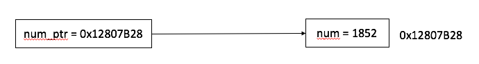

POINTERS
The pointer data type is used to hold a memory address. Using a pointer, an object in memory, such as another variable, can be accessed without needing access to the variable itself; a function, e.g. scanf(), is given a pointer to data to use or update instead of only being given a copy of it. Arrays and strings also make use of pointers that correspond to their starting addresses in memory.
Declaring a pointer is done with the data type of the memory object followed by *; if a pointer isn't used right away when declared, it should be assigned NULL (which is usually defined as 0), e.g.
int *num_ptr = NULL;
Otherwise, an address of an object can be assigned to a pointer by using the address-of operator &:
num_ptr = &num1;

Pointers to scalar objects can be used in place of variables using the dereference operator *:
int num2 = *num_ptr;
(Recall how scanf() requires the & operator before the names of local variables used to record input: this is so that scanf() knows where the local variable is in memory in order to modify it; what is actually passed to scanf() is a pointer, rather than the value of a variable.)